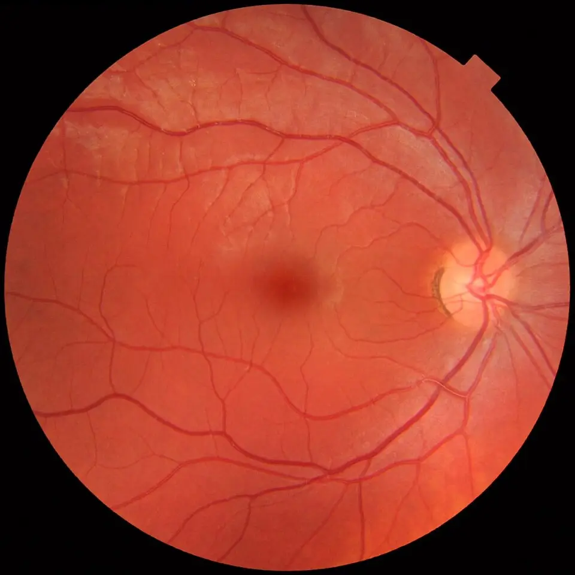
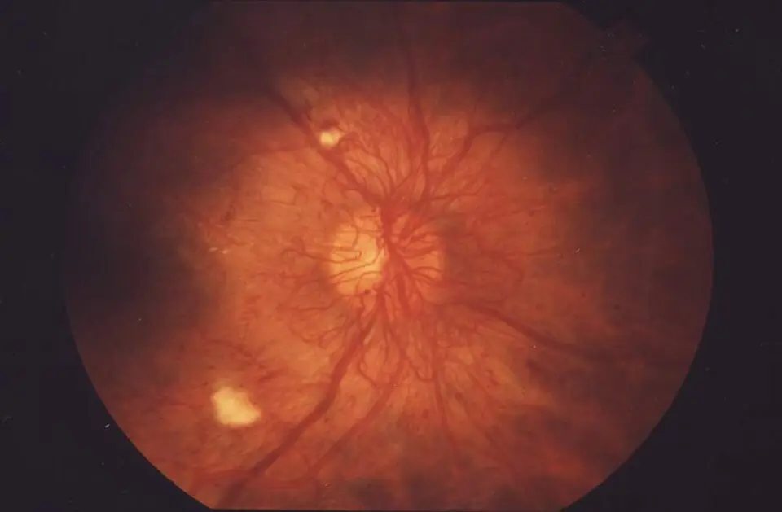

DX.5 — Rétinopathie diabétique
La rétinopathie diabétique (RD) reste longtemps muette, puis elle prive le patient de sa vision centrale par l’œdème maculaire ou de tout son œil par la proliférationS11. Le médecin la cherche donc chez chaque diabétique, sans attendre une plainte, et il trie toute baisse visuelle nouvelle selon le cours du symptômeS3.
1. Définition
Le Collège des ophtalmologistes universitaires de France (COUF) définit en 2025 la rétinopathie diabétique comme une conséquence de l’hyperglycémie chronique sur la rétineS11. Elle associe deux atteintes des capillaires rétiniens : leur hyperperméabilité, qui produit l’œdème, et leur occlusion, qui produit l’ischémieS11. La présence de néovaisseaux sépare la forme non proliférante de la forme proliférante, tandis que l’œdème maculaire se décrit à part et peut accompagner chaque stadeS11.
2. Épidémiologie (Suisse, puis Europe)
En 2022, 6,2 % des personnes de 15 ans et plus vivant en Suisse déclaraient un diabète ou un traitement antidiabétique, contre 4,8 % en 2017S5. La proportion atteignait 12,7 % sans formation postobligatoire et 4,8 % après une formation tertiaire, ce qui désigne un gradient social netS5. L’équipe lausannoise de Jules-Gonin estimait en 2015 que la RD touche 25 à 30 % des diabétiques et 60 % des diabétiques de type 2 après dix ansS3.
Dans la cohorte vaudoise CoDiab-VD, 40,9 % des diabétiques de type 1 et 9,8 % des diabétiques de type 2 déclaraient une RDS4. Seuls 70,5 % des participants avaient vu un ophtalmologue durant l’année écoulée, alors que presque tous savaient que le diabète abîme l’œilS4. Les chiffres suisses et européens montrent ainsi un risque élevé et un dépistage incomplet ; l’histoire naturelle explique pourquoi ce retard coûte la vueS11.
3. Physiopathologie
Le raisonnement exige d’abord une base anatomique : la macula porte la vision fine au centre, alors que la périphérie, plus étendue, reste muette quand elle s’abîmeS11. L’hyperglycémie active la voie de l’aldose réductase, provoque la glycation des protéines, active la protéine kinase C et crée un stress oxydatifS11. La membrane basale s’épaissit, les péricytes puis les cellules endothéliales meurent, et les capillaires s’obstruentS11.
Deux conséquences en découlent : la fuite capillaire épaissit la macula, tandis que l’occlusion capillaire rend la périphérie ischémiqueS11. La rétine ischémique sécrète alors du facteur de croissance de l’endothélium vasculaire (VEGF), qui fait naître des néovaisseaux et aggrave la fuiteS11. L’équipe de Jules-Gonin rappelle que l’inflammation rétinienne participe tôt à l’œdème, ce qui justifie l’usage des corticoïdes intravitréensS3. La cascade complète et le tableau de corrélation relient chaque lésion à l’examen qui la montre et au traitement qui la corrige.
4. Démarche diagnostique
Chez un diabétique qui perd la vue, le médecin écarte d’abord ce qui ne pardonne aucun délai. Il pense à l’occlusion artérielle rétinienne (DX.9, 🚩 E1), à l’artérite à cellules géantes (DX.10, 🚩 E2) et au décollement rhegmatogène (DX.7, 🚩 E3). Il cherche ensuite les complications propres à la RD, car l’hémorragie intravitréenne, le décollement tractionnel et le glaucome néovasculaire menacent l’œil en quelques joursS11. La cataracte (DX.2), la dégénérescence maculaire (DX.3) et l’occlusion veineuse (DX.6) coexistent souvent ; le tableau discriminant donne l’élément qui tranche entre eux.
L’erreur classique du débutant consiste à attribuer toute baisse visuelle d’un diabétique à « sa rétinopathie connue ». Il l’évite en reprenant chaque fois la rapidité d’installation, la douleur et la latéralité, que le COUF place en tête de l’interrogatoireS12.
5. Anamnèse ciblée et drapeaux rouges
L’anamnèse fixe d’abord l’ancienneté du diabète, car le diabète de type 1 a un début précis, alors que le type 2 commence souvent des années avant son diagnosticS11. Le médecin demande l’hémoglobine glyquée (HbA1c) récente et sa vitesse de baisse, car une normalisation rapide peut aggraver une RD existanteS3S11. Il recherche l’hypertension, les lipides, l’atteinte rénale, la grossesse, le tabac, l’alcool et l’obésité, que les Hôpitaux universitaires de Genève (HUG) comptent parmi les facteurs de risqueS1.
Il fait ensuite décrire le trouble visuel : la baisse centrale lente, les myodésopsies en « pluie de suie » et l’œil rouge douloureux orientent vers trois mécanismes différentsS11S12. Il note enfin les lasers, injections et chirurgies antérieurs, ainsi qu’un infarctus ou un accident vasculaire cérébral récent, qui pèse sur le choix d’un anti-VEGFS3. Chaque drapeau rouge impose une action immédiate.
6. Examen physique ciblé, région par région
L’examen se fait aux deux yeux, dans l’ordre que le COUF recommande devant toute altération visuelleS12. Le médecin mesure d’abord l’acuité visuelle de loin et de près, puis il teste le réflexe photomoteur. Il examine ensuite le segment antérieur à la lampe à fente, mesure le tonus oculaire et termine par le fond d’œil après dilatationS12. L’examen général complète ce temps oculaire, car la pression artérielle et le rein modifient la rétineS11.
La valeur de chaque geste dépend de l’outil disponible. Sans lampe à fente, l’examen du médecin de premier recours reste limité, et la palpation du globe ne mesure pas le tonus de façon fiableS10.
7. Approche syndromique
La RD se découpe en cinq syndromes, chacun relié à un mécanisme et à un geste qui le démontreS11. Le syndrome maculaire œdémateux (7.1) explique la baisse lente, le syndrome ischémique (7.2) reste muet, et le syndrome hémorragique (7.3) voile brutalement la vueS11. Le syndrome tractionnel (7.4) soulève la rétine, tandis que le syndrome néovasculaire antérieur (7.5) fait monter la pression oculaireS11S10.
| Syndrome | Signes fonctionnels | Signes physiques |
|---|---|---|
| 7.1 Maculaire œdémateux | Baisse d’acuité lente, métamorphopsies | Épaississement maculaire à l’OCT, exsudats lipidiques circinés |
| 7.2 Ischémique | Aucun au début | Hémorragies en taches, veines en chapelet, AMIR, nodules cotonneux |
| 7.3 Hémorragique | Pluie de suie, voile, baisse brutale | Vitré trouble, fond d’œil invisible |
| 7.4 Tractionnel | Baisse d’acuité parfois brutale | Fibrose prérétinienne, rétine soulevée sans déchirure |
| 7.5 Néovasculaire antérieur | Œil rouge, douleur parfois absente | Rubéose irienne, hyphéma, pression intraoculaire élevée |
8. Diagnostic positif et critères
Le diagnostic positif repose sur l’examen du fond d’œil ou sur des rétinophotographies couleur, qui montrent les lésions microvasculaires chez un diabétiqueS11. Le stade suit la classification de la Société francophone du diabète et de la Société française d’ophtalmologie, reprise par le COUF en 2025S11. La règle du « 4-2-1 » reconnaît la forme non proliférante sévère, qui progresse vers la prolifération dans 50 % des cas en un anS11.
Le compte rendu nomme séparément, pour chaque œil, le stade de la RD et le degré de l’œdème maculaire, car ce dernier peut exister à tous les stadesS11. Une acuité normale ne suffit pas à écarter une forme grave, et une photographie ne suffit pas à affirmer un œdème, que seule la coupe tomographique mesureS11S3.
9. Examens complémentaires
9.a — Référence
La photographie couleur du fond d’œil, prise au pôle postérieur et en moyenne périphérie, fonde les classifications de la RDS11. Elle se juxtapose ici à son interprétation dans la fenêtre des rétinophotographies, tandis que la tomographie par cohérence optique (OCT) reste la référence de l’œdème maculaireS11.
9.b — Première intention
Le dépistage utilise la rétinophotographie, souvent sans dilatation, ou à défaut le fond d’œil dilaté au biomicroscope, dont les résultats sont équivalentsS11. Les HUG ajoutent l’OCT pour mesurer l’épaisseur de la rétine centrale et choisir le traitementS1. Le bilan biologique décrit le terrain, mais il ne remplace jamais l’image rétinienneS11.
9.c — Alternatives
Lorsque le sang masque la rétine, l’échographie en mode B cherche un décollement sous-jacentS12. L’OCT-angiographie montre l’ischémie maculaire sans injection de colorant, ce qui l’impose quand une injection n’est pas souhaitableS11. Chez l’enfant dont le diabète de type 1 débute tôt, le premier examen devient utile à partir de l’âge de 10 ansS11.
9.d — Deuxième intention
L’angiographie à la fluorescéine n’est pas systématique ; elle cartographie l’ischémie périphérique, les néovaisseaux et les zones de fuiteS11. Le tableau d’interprétation associe chaque image rétinienne et chaque mesure à la décision qu’elles imposent.
10. Arbre décisionnel
L’arbre part d’un diabétique vu pour un dépistage ou pour une plainte visuelle ; chaque nœud renvoie à un signe, à un examen ou à une action.
- Si la baisse est brutale, le médecin cherche d’abord une urgence vasculaire ou un décollement (DX.9, DX.10, DX.7). Il suit ensuite la fenêtre Urgence — conduite chronologique.
- Si le fond d’œil montre des néovaisseaux, la photocoagulation panrétinienne (PPR) débute dès leur apparitionS11.
- Si une hémorragie persiste ou si la rétine se décolle par traction, la vitrectomie s’imposeS11.
- Si la forme est non proliférante sévère, le rétinologue rapproche la surveillance et discute une PPR préventive chez le sujet à haut risqueS11.
- Si l’OCT montre un œdème central avec baisse d’acuité, le rétinologue propose des injections intravitréennes d’anti-VEGFS11S13.
- Si la réponse reste insuffisante ou si l’œil est pseudophaque, un implant de dexaméthasone devient possibleS17.
- Si la rétine ne montre aucune lésion ou seulement une forme minime, la surveillance reste annuelleS11.
- Dans chaque branche, le médecin traitant corrige la glycémie et la pression artérielle, sans normaliser trop vite une HbA1c très élevéeS11.
11. Prise en charge selon les recommandations suisses
11.A — But chiffré
Le COUF vise une HbA1c inférieure à 7,5 % et une pression artérielle inférieure à 130/80 mmHg pour freiner la RD et l’œdèmeS11. Le but oculaire consiste à traiter l’ischémie et l’œdème avant qu’ils ne laissent une perte irréversibleS11.
11.B — Moyens
Toute complication aiguë suit la fenêtre Urgence — conduite chronologique. Le contrôle glycémique et tensionnel vient toujours en premier, car il ralentit la RD et l’œdème dans les deux types de diabèteS11. La photocoagulation panrétinienne traite la prolifération, la vitrectomie traite ses complications mécaniques et le laser focal garde une place dans l’œdème localiséS11S2.
Les injections intravitréennes constituent le traitement principal de l’œdème central avec baisse visuelle, selon EURETINA comme selon le COUFS13S11. La pharmacologie suisse comprend cinq molécules autorisées par Swissmedic dans l’œdème maculaire diabétique, chacune dans sa fiche AIPS. Les traitements systémiques, les situations spéciales et le volet social et assurantiel complètent ce plan.
11.C — Surveillance
Le rythme des contrôles dépend du stade et des situations à risque, et il suit le calendrier de surveillanceS11. Après chaque injection, l’équipe contrôle la pression intraoculaire et la perfusion papillaire, puis elle revoit le fond d’œil quelques jours plus tardS15.
11.D — Pronostic et sortie
Le pronostic dépend surtout de la précocité du traitement, et les critères de sortie se vérifient un par un avant le départ du patientS6S3.
12. Prévention
La prévention primaire repose sur l’équilibre glycémique et tensionnel, que le COUF juge le meilleur moyen d’empêcher la RD et l’œdèmeS11. Les données de prévention primaire précisent l’apport des bloqueurs du système rénine-angiotensine et du fénofibrateS3.
La prévention secondaire est un dépistage organisé : les HUG demandent un contrôle ophtalmologique au moins annuel dès la découverte du diabèteS1. Ce geste répond directement au constat du point 2, où près de trois diabétiques vaudois sur dix échappaient au contrôle annuelS4. La prévention tertiaire protège la vision restante par la régularité du suivi et le traitement précoce des récidivesS11.
13. Points clés
- La rétinopathie diabétique reste silencieuse jusqu’à un stade avancé ; seul un examen rétinien régulier la découvre à temps.
- Le diabétique de type 2 reçoit un examen rétinien dès le diagnostic, car une rétinopathie existe déjà dans un cas sur cinqS11.
- Le stade de la rétinopathie et l’œdème maculaire se décrivent séparément, œil par œil, car ils relèvent de traitements différents.
- Les néovaisseaux imposent la photocoagulation panrétinienne, alors que l’œdème central avec baisse visuelle relève des injections intravitréennes.
- Un fond d’œil masqué par du sang impose une échographie, car seule elle exclut un décollement de rétine.
- Une baisse rapide d’une HbA1c très élevée peut aggraver la rétine ; elle justifie un contrôle ophtalmologique rapproché.
14. Pièges et questions fréquentes à l’examen fédéral suisse
| Question | Bonne réponse | Raison |
|---|---|---|
| Un diabétique de type 2 vient d’être diagnostiqué et voit bien : quand faut-il examiner sa rétine ? | Tout de suite. | Une RD existe chez 20 % des diabétiques de type 2 dès la découverte (point 9)S11 |
| Une forme non proliférante sévère impose-t-elle des néovaisseaux ? | Non. | La règle 4-2-1 décrit l’ischémie sans néovaisseau ; le risque de prolifération atteint 50 % en un an (point 8)S11 |
| Un œdème maculaire suppose-t-il une forme proliférante ? | Non. | L’œdème accompagne tous les stades et se mesure à l’OCT (point 8)S11 |
| Une hémorragie intravitréenne masque la rétine : peut-on attendre qu’elle se résorbe sans autre examen ? | Non. | L’échographie en mode B doit exclure un décollement de rétine (point 9)S12 |
| Quel intervalle maximal l’AIPS d’Eylea autorise-t-elle dans l’œdème maculaire diabétique ? | Huit semaines la première année. | Après trois injections mensuelles, l’AIPS espace les intervalles jusqu’à 8 semaines, puis fait vérifier au bout d’un an s’ils peuvent encore être espacés (point 11)S14 |
| Un pseudophake diabétique garde un œdème malgré les anti-VEGF : quelle option l’AIPS ouvre-t-elle ? | Implant de dexaméthasone (Ozurdex®). | L’AIPS le réserve aux pseudophakes, aux répondeurs insuffisants ou aux patients sans alternative non corticoïde (point 11)S17 |
| Un diabétique sans douleur présente un œil rouge avec rubéose : est-ce rassurant ? | Non. | Le diabétique peut ne pas avoir mal ; le glaucome néovasculaire exige une prise en charge immédiate (point 5)S10 |
| Une diabétique de type 1 planifie une grossesse : quand examiner sa rétine ? | Avant la conception. | Le contrôle se répète ensuite tous les trois mois sans RD et chaque mois avec RD (point 11)S11 |
| Le diabète gestationnel impose-t-il une surveillance du fond d’œil ? | Non. | Il n’expose en théorie à aucune RD ; il expose en revanche à un diabète ultérieur (point 12)S11 |
Sources
Les sources ont été consultées le 11.11.2026 (Europe/Zurich).
- [S1] Hôpitaux universitaires de Genève (HUG), Service d’ophtalmologie. Rétinopathie diabétique : les facteurs de risque et le diagnostic. Mise à jour du 08.09.2025. https://www.hug.ch/ophtalmologie/retinopathie-diabetique-facteurs-risque-diagnostic
- [S2] HUG, Service d’ophtalmologie. Rétinopathie diabétique : les traitements. Mise à jour du 08.09.2025. https://www.hug.ch/ophtalmologie/retinopathie-diabetique-traitements
- [S3] Guex-Crosier Y, Behar-Cohen F (Hôpital ophtalmique Jules-Gonin, Lausanne). Rétinopathie diabétique : nouvelles possibilités thérapeutiques. Revue Médicale Suisse 2015;11:101-7. https://www.revmed.ch/view/539002/4348149/RMS_456-457_101.pdf
- [S4] Konstantinidis L, Carron T, de Ancos E, et al. Awareness and practices regarding eye diseases among patients with diabetes: a cross sectional analysis of the CoDiab-VD cohort (résumé). BMC Endocrine Disorders 2017;17:56. doi:10.1186/s12902-017-0206-2. https://doi.org/10.1186/s12902-017-0206-2
- [S5] Office fédéral de la santé publique (OFSP) et Observatoire suisse de la santé (Obsan), MonAM. Diabète (15 ans et plus), données de l’Enquête suisse sur la santé 2022. https://ind.obsan.admin.ch/en/indicator/monam/diabetes-age-15
- [S6] Zirpel JJ, Pfister IB, Gerhardt C, et al. (Berne). Long-term outcomes of intravitreal therapy for symptomatic diabetic macular oedema in a real-world setting in Switzerland (résumé). Graefe’s Archive for Clinical and Experimental Ophthalmology 2021. doi:10.1007/s00417-021-05187-z. https://doi.org/10.1007/s00417-021-05187-z
- [S7] Saad A, Plasencia C, Garweg J, et al. First-year real-world outcomes of faricimab in clinically significant diabetic macular oedema: a Swiss retina research network report (résumé). BMJ Open Ophthalmology 2026. doi:10.1136/bmjophth-2025-002467. https://doi.org/10.1136/bmjophth-2025-002467
- [S8] Turgut F, Somfai GM, Tappeiner C, et al. Intravitreal dexamethasone implant in anti-VEGF pretreated diabetic macular edema — a Swiss cohort study (résumé). Pharmaceuticals 2024;17:1235. doi:10.3390/ph17091235. https://doi.org/10.3390/ph17091235
- [S9] Ambresin A, Quist SW, Boer M, et al. Cost-minimisation analysis of anti-VEGF therapies in neovascular age-related macular degeneration and diabetic macular oedema in Switzerland (résumé). Journal of Medical Economics 2025. doi:10.1080/13696998.2025.2536420. https://doi.org/10.1080/13696998.2025.2536420
- [S10] HUG, Service de médecine de premier recours. Prats M, Malushaj L, et al. Œil rouge. Stratégie 2025. https://www.hug.ch/sites/interhug/files/2025-09/strategie_oeil_rouge_2025.pdf
- [S11] Collège des ophtalmologistes universitaires de France (COUF). Ophtalmologie, référentiel 2025, chapitre 20 : Rétinopathie diabétique (C. Creuzot-Garcher). https://couf.fr/xhtml/Ch020_347-369_B9782294786624500290.xhtml
- [S12] COUF. Ophtalmologie, référentiel 2025, chapitre 8 : Altération aiguë de la vision. http://couf.fr/wp-content/uploads/2025/10/CH8_Ophtalmologie_-Sous-legide-du-College-des-ophtalmologistes-universitaires-de-France-1.pdf
- [S13] Schmidt-Erfurth U, Garcia-Arumi J, Bandello F, et al. Guidelines for the management of diabetic macular edema by the European Society of Retina Specialists (EURETINA) (résumé). Ophthalmologica 2017;237:185-222. doi:10.1159/000458539. https://doi.org/10.1159/000458539
- [S14] Swissmedic, information professionnelle (AIPS) Eylea® 2 mg/50 µl (aflibercept), n° 62393 et 62397, Bayer (Schweiz) AG, mise à jour septembre 2026. https://files.refdata.ch/simis-public-prod/MedicinalDocuments/3a50bb15b1b94fc9b3d3d187b066ad53-fr.html
- [S15] Swissmedic, AIPS Lucentis® (ranibizumab), n° 57664 et 63277, Novartis Pharma Schweiz AG, mise à jour juin 2026. https://files.refdata.ch/simis-public-prod/MedicinalDocuments/62409d1a036140438fde5504aeaa50a1-fr.html
- [S16] Swissmedic, AIPS Vabysmo® (faricimab), n° 68395 et 69709, Roche Pharma (Suisse) SA, mise à jour octobre 2026. https://files.refdata.ch/simis-public-prod/MedicinalDocuments/9f498b8f83bb4125b8cf5b930a50c724-fr.html
- [S17] Swissmedic, AIPS OZURDEX® (dexaméthasone, implant intravitréen), n° 60324, AbbVie AG, mise à jour mars 2026. https://files.refdata.ch/simis-public-prod/MedicinalDocuments/2777cfad4fa24ca78974ea8496428448-fr.html
- [S18] Swissmedic, AIPS Beovu® (brolucizumab), n° 67244, Novartis Pharma Schweiz AG, mise à jour avril 2026. https://files.refdata.ch/simis-public-prod/MedicinalDocuments/94813fe488554771b7a3c65470e1c76f-fr.html
Deux axes de description
Le premier axe recherche des néovaisseaux prérétiniens ou prépapillaires : leur absence définit la forme non proliférante, leur présence la forme proliféranteS11. Le second axe apprécie la macula, car l’œdème et les exsudats lipidiques y menacent directement la vision fineS11. L’équipe de Jules-Gonin rappelle que la classification des stades ignore l’œdème, qui exige des photographies stéréoscopiques ou une OCT pour être affirméS3.
Chiffres suisses puis européens
Le tableau suivant place les données suisses avant les données françaises, et il précise pour chaque chiffre la population, l’année et la nature de la mesure.
| Chiffre | Population | Année et nature | Source |
|---|---|---|---|
| 6,2 % déclarent un diabète (4,8 % en 2017) | Population suisse de 15 ans et plus | Enquête suisse sur la santé 2022, déclaration | S5 |
| 6,9 % des hommes, 5,6 % des femmes | Même population | 2022, déclaration | S5 |
| Environ 400 000 diabétiques | Suisse | Estimation publiée en 2015 | S3 |
| RD chez 25 à 30 % des diabétiques ; 60 % des diabétiques de type 2 après dix ans | Diabétiques | Revue suisse, 2015 | S3 |
| RD déclarée : 40,9 % (type 1), 9,8 % (type 2) | 323 diabétiques du canton de Vaud | Cohorte CoDiab-VD, déclaration, 2017 | S4 |
| 70,5 % avec examen ophtalmologique dans l’année | Même cohorte | 2017, déclaration | S4 |
| Environ 30 % de RD, soit un million de patients | Diabétiques en France | Référentiel COUF 2025 | S11 |
| Œdème maculaire chez environ 30 % des diabétiques de type 2 | Diabétiques de type 2 traités | Revue suisse, 2015 | S3 |
La déclaration du patient sous-estime la RD, puisqu’une affection silencieuse ne se déclare que si un examen l’a déjà découverteS4S11. Le chiffre vaudois de 9,8 % chez les diabétiques de type 2 ne contredit donc pas les 25 à 30 % de la revue lausannoiseS4S3.
Histoire naturelle et pronostic
Dans le diabète de type 1, la RD reste en général absente avant sept ans d’évolutionS11. Après vingt ans, elle touche 90 à 95 % des patients, dont 40 % sous forme proliféranteS11. Dans le diabète de type 2, 20 % des patients ont déjà une RD au diagnostic, et 60 % en ont une après quinze ansS11. Le risque à long terme du diabétique de type 2 tient davantage à l’œdème maculaire qu’à la proliférationS11.
La RD progresse lentement, mais elle connaît des poussées rapides ; l’œdème s’aggrave lors d’un déséquilibre glycémique, d’une insuffisance rénale ou d’une poussée hypertensiveS11. Une prolifération non traitée peut conduire vite à la cécité par décollement tractionnel ou par glaucome néovasculaireS11. Le COUF en fait la première cause de cécité chez les patients de moins de 50 ansS11.
La revue lausannoise souligne que le dépistage systématique et le laser préventif ont rendu rares les formes proliférantes aveuglantes ; l’œdème maculaire est devenu la principale cause de baisse visuelleS3. La forme proliférante sévère touche encore environ 20 % des diabétiques de type 1 après trente ans d’évolutionS3.
Base à connaître : le fond d’œil normal
La rétine reçoit son sang par des capillaires étanches, dont la paroi forme la barrière hématorétinienne ; sa rupture laisse passer le plasma dans le tissu rétinienS11S3. L’œdème prédomine dans la macula, au centre, alors que les occlusions capillaires touchent surtout la périphérieS11. La fovéa, au centre de la macula, ne contient que des cônes, ce qui explique la gravité de toute lésion qui l’atteintS3.
Fond d'œil droit normal. La rétinophotographie couleur centrée sur le pôle postérieur montre un œil droit sans lésion.

Lisez d'abord seul ce cliché (fond d'œil droit normal) : cherchez vous-même le signe.
La copie annotée (fond d'œil droit normal) porte des repères qui sont décrits ci-dessous.
- La papille, nette et rosée, correspond à la sortie du nerf optique et l’entrée des vaisseaux centraux.
- La fovéa, plus sombre et sans vaisseau, porte la vision fine ; la macula l’entoure entre les arcades.
- L’arcade temporale supérieure délimite le pôle postérieur, où l’œdème maculaire se constitue.
- La rétine située au-delà des arcades constitue la périphérie, où siègent surtout les occlusions capillaires.
- Une photographie centrée sur le pôle postérieur ne montre pas toute la périphérie, où débutent souvent l’ischémie et les néovaisseaux.
Ce que l'image décide. Le lecteur qui repère papille, fovéa et arcades sait ensuite situer chaque lésion diabétique par rapport au centre de la vision.

Le lecteur repère donc toujours trois structures avant de nommer une lésion : la papille, la fovéa et les arcades vasculaires temporales qui bordent le pôle postérieur.
Cascade physiopathologique
Amorce. L’hyperglycémie active la voie de l’aldose réductase, qui accumule dans la cellule du sorbitol toxiqueS11. La glycation non enzymatique des protéines épaissit les membranes basales et diminue la diffusion de l’oxygèneS11. Le stress oxydatif, le système rénine-angiotensine et l’inflammation modifient ensuite le flux sanguin rétinien et créent une hypoxie relativeS11.
Développement. Les péricytes puis les cellules endothéliales disparaissent, si bien que les capillaires s’obstruent ; des microanévrismes se forment sur les capillaires voisins des territoires non perfusésS11. Une dégénérescence neuronale rétinienne précoce peut précéder toute lésion vasculaire visible au fond d’œilS11.
Installation. Les cellules gliales de Müller libèrent des cytokines pro-inflammatoires, et la balance entre VEGF et facteur dérivé de l’épithélium pigmentaire basculeS3. L’hyperperméabilité qui en résulte épaissit la macula, et des lipoprotéines précipitent en exsudats lipidiquesS11.
Maintien. La revue lausannoise décrit une « mémoire métabolique » : après une longue hyperglycémie, la RD continue d’évoluer pour son propre compte malgré un meilleur contrôleS3. Ce phénomène explique pourquoi le contrôle glycémique précoce protège mieux qu’une correction tardiveS3.
Perturbation, exploration, traitement
Chaque ligne relie une perturbation à l’examen qui la montre et au traitement qui la corrige, avec le mécanisme de ce traitement.
| Perturbation | Exploration | Traitement et mécanisme |
|---|---|---|
| Fuite capillaire maculaire | OCT : épaississement, logettes cystoïdes | Anti-VEGF : ils réduisent la perméabilité induite par le VEGF S11 |
| Inflammation rétinienne | OCT : œdème persistant malgré les anti-VEGF | Implant de dexaméthasone : il réduit l’inflammation et le passage d’eau S3S2 |
| Occlusion capillaire périphérique | Rétinophotographies, angiographie à la fluorescéine | Photocoagulation panrétinienne : elle détruit la rétine ischémique qui produit le VEGF S11 |
| Ischémie maculaire | OCT-angiographie : zone avasculaire centrale élargie | Aucun traitement ne restaure la perfusion ; il faut prévenir par le contrôle systémique S11 |
| Néovaisseaux | Fond d’œil, angiographie : diffusion du colorant | PPR ; anti-VEGF en appoint, à effet seulement suspensif S11 |
| Fibrose et traction | OCT, échographie en mode B | Vitrectomie : elle retire le vitré et les membranes S11 |
| Néovaisseaux de l’angle | Lampe à fente, tonométrie | Prise en charge spécialisée immédiate ; anti-VEGF en appoint S10S11 |
Diagnostics discriminants
Le tableau classe d’abord les urgences, puis les diagnostics fréquents qui coexistent avec la RD chez le même patient.
| Diagnostic | Élément qui tranche | Piège | Conduite si positif |
|---|---|---|---|
| 🚩 E1 Occlusion artérielle rétinienne (DX.9) | Baisse brutale, rétine blanche œdémateuse, macula « rouge cerise » | L’attribuer à une hémorragie diabétique | Filière d’urgence et bilan d’accident vasculaire S12 |
| 🚩 E2 Artérite à cellules géantes (DX.10) | Sujet âgé ; maladie de Horton à évoquer systématiquement | Oublier la VS et la CRP chez le diabétique âgé | VS, CRP et corticothérapie selon DX.10 S12 |
| 🚩 E3 Décollement rhegmatogène (DX.7) | Phosphènes, myodésopsies, amputation du champ, déchirure | Confondre avec un décollement tractionnel | Chirurgie rétinienne urgente S12 |
| Hémorragie intravitréenne diabétique | Pluie de suie, fond d’œil masqué, néovaisseaux connus | Conclure sans échographie | Échographie en mode B, avis rétinien S12 |
| Glaucome néovasculaire | Rubéose irienne, pression élevée | Absence de douleur chez le diabétique | Prise en charge spécialisée immédiate S10 |
| Occlusion veineuse (DX.6) | Veines tortueuses et dilatées, hémorragies dans les quatre quadrants, œdème papillaire | Les prendre pour une RD asymétrique | Voir DX.6 S12 |
| Cataracte (DX.2) | Opacité du cristallin à la lampe à fente | Opérer une RD active non stabilisée | Stabiliser la RD avant la chirurgie S11 |
Baisse centrale lente : le symptôme de l’œdème
Caractères. La baisse touche la vision centrale, s’installe lentement et s’accompagne parfois de métamorphopsiesS11S12. Elle est typique de l’œdème maculaire, car le liquide altère le trajet de la lumière, puis l’œdème chronique détruit des neuronesS3.
Facteurs aggravants. L’œdème se majore lors d’un déséquilibre glycémique, d’une insuffisance rénale ou d’une poussée hypertensive, ce que l’anamnèse doit rechercherS11. Une chirurgie récente de la cataracte aggrave aussi l’œdème maculaireS11.
Atypies. Une baisse disproportionnée à l’œdème mesuré fait chercher une ischémie maculaire, qui ne se traite pas par injectionS11. Une baisse brutale n’est jamais typique de l’œdème et oriente vers une hémorragie ou une occlusionS12.
Myodésopsies en « pluie de suie »
Caractères. L’hémorragie intravitréenne s’annonce souvent par une « pluie de suie », puis par une baisse d’acuité dont l’intensité dépend du volume de sangS12. Une hémorragie minime ne donne parfois que des myodésopsies, alors qu’une hémorragie massive réduit la vision à la perception lumineuseS12.
Valeur. Chez un diabétique, la rétinopathie proliférante en est la première cause, mais la déchirure rétinienne et l’occlusion veineuse ischémique donnent le même symptômeS12. Des phosphènes associés orientent davantage vers une déchirure et un décollement rhegmatogène (DX.7)S12.
Œil rouge douloureux
Caractères. Le glaucome néovasculaire ressemble à une crise aiguë par fermeture de l’angle, mais il prend parfois une forme subaiguëS10. Les douleurs profondes irradiant dans le territoire du trijumeau évoquent une hypertonie aiguëS12.
Atypie. Les HUG rappellent que la douleur peut manquer chez le diabétique, si bien que l’absence de douleur ne rassure jamais devant un œil rougeS10. Après une injection intravitréenne, une douleur, une rougeur, une photophobie ou une vision floue évoquent une endophtalmieS14.
Drapeaux rouges
Chaque drapeau rouge porte sa signification et l’action qu’il impose sans attendre le prochain contrôle.
| Drapeau rouge | Signification | Action immédiate |
|---|---|---|
| Baisse brutale de la vision | Occlusion, hémorragie ou décollement | Examen ophtalmologique en urgence S10S12 |
| Voile ou amputation du champ visuel | Décollement tractionnel ou rhegmatogène | Fond d’œil dilaté, échographie si rétine invisible S12 |
| Œil rouge, même indolore | Glaucome néovasculaire | Prise en charge spécialisée immédiate S10 |
| Douleur, rougeur ou photophobie après injection | Endophtalmie | Contact immédiat avec l’équipe d’injection S14 |
| Baisse brutale chez le sujet âgé | Artérite à cellules géantes possible | VS, CRP et filière de DX.10 S12 |
| Patient monophtalme | Tout risque menace la seule vision restante | Examen spécialisé en urgence S10 |
Examen : acuité visuelle
Geste. Le médecin mesure l’acuité de loin et de près, œil par œil, avec la correction optique du patientS12. Signe. Le médecin demande aussi si les lignes droites paraissent déformées, car ces métamorphopsies signalent une macula déforméeS12.
Piège. Une acuité normale n’exclut pas une rétinopathie grave, car la baisse ne survient qu’après une longue évolutionS11. La revue lausannoise rappelle que l’OCT suit l’œdème plus finement que l’acuité, qui peut rester conservéeS3.
Examen : réflexe photomoteur
Geste. Le médecin éclaire chaque œil et observe la réponse directe, puis la réponse consensuelle de l’œil opposéS12. Signe. Un réflexe direct diminué traduit une atteinte afférente étendue, de la rétine ou du nerf optiqueS12.
Piège. Un réflexe direct diminué avec un fond d’œil normal oriente vers une névrite optique (DX.8), et non vers la RDS12.
Examen : segment antérieur
Geste. La lampe à fente examine la cornée, la chambre antérieure, l’iris et le cristallinS12. Signe. Des néovaisseaux fins à la surface de l’iris forment la rubéose irienne, parfois compliquée d’un hyphéma par saignementS12.
Valeur. La rubéose traduit une ischémie rétinienne étendue et menace d’un glaucome néovasculaire par blocage de l’angleS11. La cataracte se cote au même temps, car elle diminue la qualité des images rétiniennes et sa chirurgie peut aggraver la RDS11.
Examen : tonus oculaire
Geste. L’ophtalmologue mesure la pression intraoculaire au tonomètre, car les HUG jugent la palpation du globe trop peu fiableS10. Signe. Une pression élevée avec rubéose signe le glaucome néovasculaireS10S12.
Piège. L’AIPS d’Eylea interdit l’injection tant que la pression intraoculaire atteint ou dépasse 30 mmHg, ce qui rend la mesure obligatoire avant chaque injectionS14.
Examen : fond d’œil après dilatation
Geste. L’ophtalmologue dilate la pupille, puis il examine la rétine à la lampe à fente et photographie le fond d’œilS1. La dilatation dure en moyenne quatre à six heures, et le patient ne doit pas conduire pendant ce tempsS1.
Lecture. Il examine le nerf optique, les vaisseaux rétiniens puis la rétine, du pôle postérieur jusqu’à la moyenne périphérieS12S11. Les microanévrismes, premiers signes de la RD, sont de petits points rouges à la limite de la visibilité, qui prédominent au pôle postérieurS11.
Signes d’ischémie. Les hémorragies en taches, les veines en chapelet et les anomalies microvasculaires intrarétiniennes (AMIR) bordent les territoires non perfusésS11. Des hémorragies en flammèches ou des nodules cotonneux péripapillaires font suspecter une rétinopathie hypertensive associéeS11.
Piège. La dilatation peut déclencher une fermeture aiguë de l’angle chez un sujet prédisposé, sauf après une iridotomie ou une chirurgie de la cataracteS12.
Examen : examen général
Geste. Le médecin mesure la pression artérielle, car le COUF rappelle que 70 % des diabétiques de type 2 sont hypertendusS11. Il cherche aussi les signes d’atteinte rénale, puisque l’insuffisance rénale aggrave l’œdème maculaireS11.
Valeur. Une atteinte rénale et une hypertension appartiennent aux facteurs de risque que les HUG listent pour la RDS1. Une diplopie transitoire chez un diabétique évoque souvent une paralysie du nerf abducens, et non une RDS11.
Valeur des gestes
La rétinophotographie dépiste la RD avec une sensibilité nettement supérieure à l’ophtalmoscopie simpleS11. Le fond d’œil dilaté au biomicroscope par un ophtalmologue permet d’obtenir des résultats équivalents aux photographiesS11.
Un champ photographique centré ne montre pas toute la périphérie ; les rétinographes ultra-grand champ couvrent 120 à 210° de la rétine sur un seul clichéS11.
7.1 Syndrome maculaire œdémateux
Signes fonctionnels. La baisse d’acuité est lente et centrale ; elle peut devenir très handicapanteS11. Signes physiques. L’OCT montre un épaississement maculaire, parfois cystoïde, et le fond d’œil montre des exsudats lipidiques en couronneS11.
Définitions. Les exsudats circinés sont des dépôts jaunes de lipoprotéines disposés autour des anomalies microvasculaires qui fuientS11. Mécanisme. La rupture de la barrière hématorétinienne, accentuée par le VEGF, permet au plasma d’envahir la rétine maculaireS11.
7.2 Syndrome ischémique
Signes fonctionnels. L’ischémie périphérique reste asymptomatique, ce qui fait d’elle la cible du dépistageS11. Signes physiques. Hémorragies en taches, veines en chapelet et AMIR estiment indirectement son étendueS11.
Ischémie maculaire. L’OCT-angiographie la montre par un élargissement de la zone avasculaire centrale, et elle explique une baisse sans œdèmeS11. Mécanisme. L’occlusion capillaire prive la rétine d’oxygène et déclenche la sécrétion de VEGFS11.
7.3 Syndrome hémorragique
Signes fonctionnels. Le patient décrit une pluie de suie puis une baisse d’acuité variableS12. Signes physiques. Le sang trouble le vitré ou forme une nappe prérétinienne, et il peut masquer toute la rétineS11S12.
Mécanisme. Les néovaisseaux prérétiniens ou prépapillaires, fragiles, saignent dans le vitréS11. Geste. Lorsque la rétine reste invisible, l’échographie en mode B est toujours indiquée pour exclure un décollementS12.
7.4 Syndrome tractionnel
Signes fonctionnels. Le décollement tractionnel peut entraîner une baisse d’acuité brutale chez le diabétique proliférantS12. Signes physiques. Une fibrose prérétinienne blanche tire la rétine, que l’OCT montre soulevée sans déchirure primitiveS11.
Définition. Le décollement tractionnel résulte de la contraction du tissu fibreux qui accompagne les néovaisseaux, alors que le décollement rhegmatogène naît d’une déchirureS11. Conduite. La chirurgie rétinovitréenne est indiquée lorsque la traction décolle la rétineS11.
7.5 Syndrome néovasculaire antérieur
Signes fonctionnels. L’œil devient rouge et douloureux comme dans une fermeture de l’angle, mais la douleur peut manquer chez le diabétiqueS10. Signes physiques. La lampe à fente montre la rubéose, des synéchies, parfois un hyphéma, et la pression est élevéeS10.
Mécanisme. Les néovaisseaux envahissent l’angle iridocornéen et bloquent l’écoulement de l’humeur aqueuseS11. Conduite. Les anti-VEGF rendent un appoint précieux dans cette complication, à côté du traitement de l’ischémieS11.
Classification SFD-SFO reprise par le COUF (2025)
La classification se fonde sur les rétinophotographies couleur et suit le risque visuel lié à l’ischémie rétinienneS11.
| Stade | Critère | Usage |
|---|---|---|
| Pas de RD | Aucune lésion | Surveillance annuelle par photographies S11 |
| RD non proliférante minime | Quelques microanévrismes ou hémorragies punctiformes | Surveillance annuelle S11 |
| RD non proliférante modérée | Diagnostic d’exclusion entre minime et sévère | Contrôle tous les 4 à 6 mois S11 |
| RD non proliférante sévère | Règle 4-2-1 | Risque de prolifération de 50 % à un an ; PPR chez certains sujets à risque S11 |
| RD proliférante, minime à sévère | Néovaisseaux, gradués par taille et localisation | PPR dès l’apparition des néovaisseaux S11 |
| RD proliférante compliquée | Hémorragie intravitréenne, décollement tractionnel, glaucome néovasculaire | Vitrectomie ou prise en charge urgente S11 |
La revue lausannoise gradue la prolifération par la surface des néovaisseaux rapportée à celle de la papille ; les néovaisseaux prépapillaires étendus définissent la forme sévèreS3.
Règle du « 4-2-1 »
La forme non proliférante sévère, dite préproliférante, associe des hémorragies rétiniennes dans 4 quadrants, des dilatations veineuses dans 2 quadrants ou des AMIR dans 1 quadrantS11. Un seul de ces trois critères suffit, car chacun témoigne d’une ischémie étendueS11.
Piège. Les AMIR sont des proliférations capillaires situées dans la rétine, autour des territoires occlus ; elles ne sont pas des néovaisseaux prérétiniens et ne signent donc pas la proliférationS11.
Classification de l’œdème maculaire
Le COUF classe l’œdème en minime, modéré ou sévère selon sa distance au centre de la macula ; il est sévère quand il atteint ce centreS11. Son incidence augmente avec la sévérité de la RD, même s’il peut accompagner chaque stadeS11.
Le traitement par anti-VEGF est indiqué lorsque l’œdème atteint le centre de la macula et s’accompagne d’une baisse de l’acuité visuelleS11. Un œdème qui épargne le centre relève d’une surveillance ou d’un laser focal cibléS11.
Rétinophotographies couleur
Indication. Les photographies servent au dépistage chez le diabétique sans RD connue et au suivi objectif de la RD établieS11S3. Prescription. Un technicien peut les prendre sans dilatation avec un rétinographe non mydriatique, au pôle postérieur et en moyenne périphérieS11.
Interprétation. Le lecteur compte les microanévrismes, les hémorragies et les signes d’ischémie, puis il classe le stade ; l’augmentation du nombre de microanévrismes indique une progressionS11. Les deux clichés suivants montrent d’abord une forme non proliférante, puis une forme proliférante.
Rétinopathie non proliférante. La rétinophotographie couleur d’un œil gauche montre des lésions microvasculaires sans néovaisseau visible.

Lisez d'abord seul ce cliché (rétinopathie diabétique non proliférante) : cherchez vous-même le signe.
La copie annotée (rétinopathie diabétique non proliférante) porte des repères qui sont décrits ci-dessous.
- Les points jaunes brillants groupés au-dessus de la fovéa sont des exsudats lipidiques, trace d’une fuite chronique.
- La fovéa reste sombre et centrale ; l’OCT dira seul si le liquide l’atteint.
- Les petits points rouges isolés correspondent à des microanévrismes ou à des hémorragies punctiformes.
- La papille reste plane et sans réseau anormal, ce qui écarte une néovascularisation prépapillaire sur ce champ.
- Des exsudats proches de la fovéa signalent une fuite, mais la photographie ne mesure pas l’épaisseur maculaire.
- Un champ unique ne permet pas de compter les hémorragies de tous les quadrants.
Ce que l'image décide. Ce cliché impose une OCT maculaire et un classement complet par photographies du pôle postérieur et de la moyenne périphérie.

Rétinopathie diabétique proliférante. La rétinophotographie couleur montre un réseau vasculaire anormal développé sur la papille et à sa surface.

Lisez d'abord seul ce cliché (rétinopathie diabétique proliférante) : cherchez vous-même le signe.
La copie annotée (rétinopathie diabétique proliférante) porte des repères qui sont décrits ci-dessous.
- Un lacis de fins vaisseaux tortueux recouvre la papille : ce sont des néovaisseaux prépapillaires.
- La tache blanche floue correspond à un nodule cotonneux, petit infarctus de la rétine interne.
- Un second foyer blanc près de l’arcade supérieure est la trace du même processus ischémique.
- Des vaisseaux nombreux sur la papille ne sont pas des vaisseaux normaux : leur calibre fin et leur trajet anarchique signent la prolifération.
Ce que l'image décide. Des néovaisseaux prépapillaires imposent un avis rétinien rapide pour une photocoagulation panrétinienne.

Pièges. Une photographie ne mesure pas l’épaisseur maculaire, et un champ limité peut manquer une ischémie périphériqueS11S3.
Tomographie par cohérence optique (OCT)
Indication. L’OCT diagnostique et suit l’œdème maculaire ; elle mesure l’épaisseur de la rétine centrale et localise les compartiments liquidiensS11. L’examen est indolore et ne demande aucune injectionS1.
Normal. La coupe normale montre une dépression fovéolaire et des couches rétiniennes régulières, de la couche des fibres nerveuses à l’épithélium pigmentaireS3. Pathologique. L’œdème cystoïde se traduit par des logettes hyporéflectives intrarétiniennes, parfois avec du liquide sous-rétinienS11S3.
Pièges. Une épaisseur qui diminue après injection ne garantit pas le retour de la vision, car l’ischémie et la perte neuronale persistentS3S11. Les études suisses suivent l’épaisseur du sous-champ central en micromètres, comme critère d’activité de l’œdèmeS7.
OCT-angiographie
Indication. Elle visualise les capillaires rétiniens sans colorant, sur des coupes « en face », et elle identifie l’ischémie maculaireS11. Interprétation. Une zone avasculaire centrale élargie signe l’ischémie maculaire, et des capillaires occlus se repèrent autour des microanévrismesS11.
Limite. Elle tend à supplanter l’angiographie pour l’ischémie maculaire, mais l’angiographie garde l’avantage pour cartographier la périphérieS11.
Angiographie à la fluorescéine
Indication. Elle complète la photographie lorsque l’on doit préciser l’ischémie périphérique, chercher des néovaisseaux ou guider un laser maculaireS11. Les HUG la décrivent comme une injection intraveineuse indolore d’un colorant qui montre les fuites et les obstructions vasculairesS1.
Interprétation. Les territoires non perfusés restent sombres, et les néovaisseaux diffusent le colorant en bordure de ces territoiresS11. Une hyperfluorescence maculaire avec accumulation dans des logettes signe l’œdème cystoïdeS11.
Piège. Le colorant n’est pas un produit iodé ; il s’agit de fluorescéine, ce que le référentiel français teste dans ses questionsS11.
Échographie en mode B
Indication. Elle s’impose dès qu’une hémorragie intravitréenne dense empêche de voir la rétineS11S12. Interprétation. Elle cherche un décollement tractionnel sous-jacent et peut montrer une déchirure qui orienterait vers une autre causeS12.
Piège. L’expression « fond d’œil inaccessible » ne veut jamais dire « rétine normale » ; seule l’échographie lève ce douteS12.
Bilan biologique du terrain
Prescription. Le médecin traitant doit documenter l’HbA1c, le bilan lipidique et la fonction rénaleS11. Ces trois mesures comptent, car l’hyperglycémie, les lipides et l’atteinte rénale aggravent la RDS11S1. Interprétation. Le COUF fixe la cible d’HbA1c en dessous de 7,5 %, et la revue lausannoise définit le diabète par une HbA1c d’au moins 6,5 %S11S3.
Piège. L’HbA1c renseigne l’exposition glycémique, mais elle ne dit rien du stade rétinien ; elle ne remplace donc jamais l’examen du fond d’œilS11.
Résultat, signification, conduite
Le tableau relie chaque résultat d’examen à sa signification et à la décision qu’il entraîne ; l’HbA1c s’exprime en pourcentage, comme dans les sources citées.
| Résultat | Signification | Conduite |
|---|---|---|
| Aucune lésion sur les photographies | Pas de RD | Contrôle annuel ; deux ans possibles si le diabète est équilibré et sans situation à risque S11 |
| Microanévrismes isolés | RD non proliférante minime | Contrôle annuel S11 |
| Hémorragies dans 4 quadrants, ou veines en chapelet dans 2, ou AMIR dans 1 | RD non proliférante sévère | Contrôle rapproché, PPR à discuter selon le risque S11 |
| Néovaisseaux prérétiniens ou prépapillaires | RD proliférante | PPR dès l’apparition S11 |
| Épaississement central à l’OCT avec baisse d’acuité | Œdème maculaire central | Anti-VEGF intravitréen S11S13 |
| Zone avasculaire centrale élargie | Ischémie maculaire | Expliquer une baisse sans œdème ; contrôle systémique S11 |
| Rétine décollée à l’échographie | Décollement tractionnel | Chirurgie rétinovitréenne S11S12 |
| HbA1c au-dessus de 7,5 % | Cible du COUF non atteinte | Renforcer progressivement le traitement du diabète S11 |
Urgence — conduite chronologique
D’emblée. Devant une baisse brutale, le médecin mesure l’acuité, teste les pupilles et cherche un œil rouge, car ces trois gestes trient les urgences du DX.5 et de la Phase AS12S10. Il évoque systématiquement une maladie de Horton chez le sujet âgé et demande une VS et une CRPS12.
Immédiatement. Un œil rouge avec rubéose ou une pression élevée part immédiatement chez l’ophtalmologue, car le glaucome néovasculaire est une urgence spécialiséeS10. Une douleur ou une rougeur après injection intravitréenne impose le même transfert immédiat, puisqu’elle évoque une endophtalmieS14.
En urgence. Une hémorragie intravitréenne qui masque la rétine impose une échographie en mode B, qui exclut ou affirme un décollementS12. Un décollement de rétine découvert conduit aux urgences ophtalmologiques pour une chirurgieS12.
Rapidement. Des néovaisseaux non compliqués conduisent à débuter la PPR dès leur découverte, en plusieurs séancesS11. Une hémorragie qui ne se résorbe pas spontanément conduit à la vitrectomie, que les HUG pratiquent à quelques semaines d’intervalle quand les deux yeux sont atteintsS2.
Ce qu’il faut prévoir. La maculopathie diabétique ne demande jamais de laser en urgence, ce qui évite de surcharger la filière urgenteS11. Le piège qui fait perdre du temps consiste à attendre la résorption d’une hémorragie sans échographieS12.
Photocoagulation panrétinienne (PPR)
Principe. Le laser délivre des impacts disséminés sur toute la rétine périphérique, en épargnant le centre ; il détruit la rétine ischémique, source du VEGF, sans viser directement les néovaisseauxS11. La néovascularisation régresse dans près de 90 % des cas, ce qui réduit fortement le risque de cécitéS11.
Indications. La PPR traite toute RD proliférante et certaines formes non proliférantes sévères à haut risque : grossesse, normalisation glycémique rapide d’un jeune diabétique de type 1, chirurgie de la cataracteS11. Les HUG la préfèrent avant l’apparition des néovaisseaux lorsque l’ischémie est étendueS2.
Réalisation. Elle se fait en consultation, sous simple anesthésie cornéenne par collyre, en plusieurs séancesS11. Les anti-VEGF stabilisent temporairement la RD pendant ces séances, mais le laser reste le seul traitement définitif de l’ischémieS11.
Vitrectomie
La vitrectomie consiste à retirer le corps vitré à l’aide de micro-instrumentsS2. Les HUG l’indiquent lorsque l’hémorragie intravitréenne ne disparaît pas spontanément, lorsque le vitré tire sur la rétine ou lorsque la rétine est décolléeS2. Le COUF la réserve aux formes proliférantes compliquées d’hémorragie persistante ou de décollement tractionnelS11.
Laser focal maculaire
Le laser focal consiste à appliquer des impacts localisés et non confluents sur les zones épaissies, en épargnant les 1 500 µm centraux, en une ou deux séancesS11. Il traite surtout les foyers d’œdème focal qui produisent des exsudats ou du liquide menaçant le centreS11.
EURETINA ne recommande plus le laser comme traitement de l’œdème maculaire diabétique en première ligne, depuis que les anti-VEGF l’ont supplantéS13. Les HUG l’emploient seul ou associé aux injectionsS2.
Pharmacologie suisse de l’œdème maculaire diabétique
Toutes ces molécules s’injectent dans le vitré par un ophtalmologue expérimenté, sous asepsie, et chacune exige la traçabilité du nom commercial et du lotS14S16. Le tableau indique la dose de l’AIPS, et chaque nom permet d’ouvrir la fiche complète.
| Molécule ® | Dose AIPS et voie | Durée et rythme | Contre-indication majeure |
|---|---|---|---|
| Aflibercept — Eylea® 2 mg (n° 62393, 62397) S14 | 2 mg dans 50 µl, intravitréen S14 | Toutes les 4 semaines pendant trois mois, puis jusqu’à 8 semaines S14 | Grossesse, allaitement, infection ou inflammation oculaire |
| Ranibizumab — Lucentis® (n° 57664, 63277) | 0,5 mg dans 0,05 ml, intravitréen S15 | Mensuel jusqu’à l’acuité maximale, puis intervalles adaptés | Infection oculaire ou périoculaire, inflammation active |
| Faricimab — Vabysmo® (n° 68395, 69709) | 6 mg dans 0,05 ml, intravitréen S16 | Toutes les 4 semaines pour 4 injections, puis jusqu’à 16 semaines | Infection oculaire, inflammation active |
| Brolucizumab — Beovu® (n° 67244) | 6 mg dans 0,05 ml, intravitréen S18 | Toutes les 6 semaines pour 5 injections, puis 12 ou 16 semaines | Inflammation intraoculaire existante |
| Dexaméthasone — OZURDEX® (n° 60324) | Un implant de 0,7 mg, intravitréen S17 | Nouvelle administration après environ six mois | Glaucome avancé non maîtrisé, rupture capsulaire |
Choix. EURETINA recommande les anti-VEGF en première ligne et garde les corticoïdes pour l’œdème chronique persistantS13. La revue lausannoise conseille d’éviter les anti-VEGF après un événement cardiovasculaire de moins de trois à six mois, en accord avec le cardiologueS3. Le choix tient aussi compte du cristallin, d’un glaucome et de la capacité du patient à revenir souventS3.
Aflibercept — Eylea® 2 mg/50 µl (n° 62393, seringue ; 62397, flacon)S14
| Indication | L’AIPS autorise notamment le traitement de l’œdème maculaire diabétique (OMD). |
|---|---|
| Mécanisme | Récepteur soluble qui piège le VEGF et le facteur de croissance placentaire S3 |
| Dose AIPS | OMD : 2 mg dans 50 µl par voie intravitréenne toutes les 4 semaines pendant les trois premiers mois ; intervalles ensuite espacés jusqu’à 8 semaines au maximum ; contrôle à chaque traitement S14 |
| Contre-indications | Hypersensibilité à l’aflibercept, infection oculaire ou périoculaire, inflammation intraoculaire active ou présumée, grossesse et allaitement |
| Grossesse et allaitement | Contraception efficace pendant le traitement et au moins 3 mois après la dernière injection ; pas d’emploi pendant la grossesse ; allaitement non recommandé par précaution |
| Précautions | Ne pas injecter tant que la pression intraoculaire est ≥ 30 mmHg ; données limitées après un AVC, un AIT ou un infarctus dans les 6 derniers mois ; volume excédentaire de la seringue à expulser |
| Effets indésirables | Hémorragie conjonctivale 25,0 %, hémorragie rétinienne 11,3 %, baisse d’acuité 11,1 %, douleur oculaire 10,2 % |
Ranibizumab — Lucentis® (n° 57664, 63277)S15
| Indication | Adulte : perte de vision due à un OMD ; RD non proliférante moyennement sévère à sévère ; RD proliférante |
|---|---|
| Dose AIPS | 0,5 mg dans 0,05 ml en injection intravitréenne unique ; intervalle d’au moins un mois dans le même œil ; injections mensuelles jusqu’à l’acuité maximale ou l’absence d’activité, trois ou plus souvent nécessaires au début S15 |
| Contre-indications | Hypersensibilité, infection oculaire ou périoculaire, inflammation intraoculaire active |
| Grossesse et allaitement | Contraception efficace pendant le traitement ; aucune donnée chez la femme enceinte et un effet anti-angiogénique possible sur le développement ; allaitement déconseillé |
| Surveillance | Perfusion papillaire immédiatement après l’injection, pression intraoculaire dans les 30 minutes, fond d’œil après 2 à 7 jours |
| Populations | Aucun ajustement chez l’insuffisant rénal ni après 65 ans ; usage déconseillé chez l’enfant et l’adolescent |
Faricimab — Vabysmo® (n° 68395, 69709)S16
| Indication | Traitement de l’œdème maculaire diabétique (OMD) |
|---|---|
| Mécanisme | Inhibiteur du VEGF et de l’angiopoïétine-2 |
| Dose AIPS | OMD : 6 mg (0,05 ml) en injection intravitréenne toutes les 4 semaines pour les 4 premières injections ; schéma « treat-and-extend » ensuite, jusqu’à 16 semaines selon l’épaisseur centrale et l’acuité S16 |
| Contre-indications | Infection oculaire ou périoculaire, inflammation intraoculaire active, hypersensibilité au faricimab |
| Grossesse et allaitement | Contraception efficace jusqu’à 3 mois après la dernière dose ; pas d’emploi pendant la grossesse, sauf si l’état clinique de la femme le justifie |
| Populations | Aucun ajustement en cas d’insuffisance hépatique ou rénale ; traitement à long terme |
Dans un réseau suisse, 184 yeux traités par faricimab ont réduit leur épaisseur centrale en un an, avec un intervalle moyen de 12,7 semaines chez les yeux naïfsS7.
Brolucizumab — Beovu® (n° 67244)S18
| Indication | Dégénérescence maculaire néovasculaire et œdème maculaire diabétique |
|---|---|
| Dose AIPS | OMD : 6 mg (0,05 ml) en injection intravitréenne, les cinq premières toutes les 6 semaines, puis toutes les 12 ou 16 semaines ; 8 semaines possibles si la maladie reste active S18 |
| Contre-indications | Hypersensibilité, infection oculaire ou périoculaire existante ou suspectée, inflammation intraoculaire existante |
| Mise en garde | Vascularite rétinienne ou occlusion vasculaire rétinienne : arrêt du traitement ; immunogénicité possible dès la première injection |
| Grossesse et allaitement | Contraception fiable pendant le traitement et au moins un mois après ; pas d’emploi pendant la grossesse sauf absolue nécessité ; allaitement déconseillé |
Dexaméthasone — OZURDEX® (implant intravitréen, n° 60324)S17
| Indication | Baisse d’acuité due à un OMD chez le pseudophake, chez le répondeur insuffisant à un traitement non corticoïde ou quand ce traitement ne convient pas |
|---|---|
| Dose AIPS | Un implant de 0,7 mg dans le vitré de l’œil atteint ; pas d’injection simultanée des deux yeux ; nouvelle administration après environ six mois en cas de récidive ; aucune donnée au-delà de sept implants S17 |
| Contre-indications | Infection oculaire ou périoculaire active ou suspectée, glaucome avancé non maîtrisé par les seuls médicaments, hypersensibilité, œil aphaque avec rupture capsulaire postérieure |
| Grossesse et allaitement | Pendant la grossesse seulement en cas d’absolue nécessité ; non recommandé pendant l’allaitement |
| Effets à annoncer | Cataracte et hausse de la pression intraoculaire ; dans l’OMD, 59 % des yeux phaques traités ont été opérés de la cataracte en trois ans |
| Populations | Aucune adaptation chez le sujet âgé ; aucune utilisation justifiée chez l’enfant dans l’OMD |
Dans une cohorte suisse de 95 yeux prétraités, l’implant a réduit les injections d’anti-VEGF de 6,4 à 1,6 par an, mais 26,3 % des yeux ont reçu un traitement antiglaucomateuxS8.
Traitements systémiques
Le COUF ne reconnaît aucun médicament spécifique qui améliore ou ralentisse la RD, en dehors du contrôle glycémique et tensionnelS11. La revue lausannoise rapporte que l’énalapril et le losartan réduisaient de 65 et 70 % la progression chez des diabétiques de type 1 dans l’étude RASSS3. Elle cite aussi un effet favorable du fénofibrate chez les diabétiques de type 2, partiellement indépendant des lipidesS3.
La correction glycémique se fait progressivement, car une baisse brutale peut aggraver la RD, en particulier lors du passage à la pompe à insulineS11. Chez des diabétiques de type 1, une baisse de l’HbA1c de plus de 0,5 % en six mois augmentait le risque d’évolution vers la photocoagulationS3.
Situations spéciales
Grossesse. Le fond d’œil se fait avant une grossesse programmée, sinon dès son début ; la surveillance devient trimestrielle sans RD et mensuelle avec RDS11. La revue lausannoise ajoute un contrôle un an après l’accouchementS3. Eylea est contre-indiqué pendant la grossesse et l’allaitement, ce qui oriente vers la PPR quand une prolifération menaceS14S11.
Allaitement. L’AIPS de Lucentis déconseille l’allaitement, car des données limitées retrouvent le ranibizumab dans le lait maternelS15. Adolescent. La puberté et l’adolescence, surtout entre 16 et 20 ans, exposent à une évolution rapide qui impose une surveillance renforcéeS11.
Terrain. Les AIPS de Lucentis et de Vabysmo n’imposent aucun ajustement de dose dans ces situations, puisque l’exposition systémique reste faibleS15S16. Chirurgie bariatrique et cataracte. La perte de poids rapide et l’année qui suit une chirurgie de la cataracte exposent à une progression ; le COUF opère donc la cataracte sur une RD stabiliséeS11.
Volet social et assurances
Les traitements de la RD sont pris en charge par l’assurance obligatoire des soins (LAMal), sous déduction de la franchise et d’une quote-part de 10 %S2. Une analyse suisse de 2025 a estimé le coût de deux ans de traitement de l’œdème maculaire diabétiqueS9. Il atteignait 11 242 francs avec l’aflibercept à haute dose et 20 637 francs avec le ranibizumab de référenceS9.
Le patient ne conduit pas pendant la dilatation, ni après une injection tant que sa vision n’est pas redevenue normaleS1S14. Le médecin recherche aussi les obstacles aux rendez-vous, puisque la méconnaissance du but préventif de l’examen freine le dépistage dans le canton de VaudS4.
Calendrier de surveillance
Le calendrier suit le stade et les situations à risque ; il vise à traiter avant toute baisse irréversible de l’acuité.
| Situation | Rythme | Source |
|---|---|---|
| Pas de RD ou RD non proliférante minime | Annuel, par photographies ; deux ans si le diabète est équilibré sans situation à risque | S11 |
| RD non proliférante modérée à sévère | Tous les 4 à 6 mois | S11 |
| Diabète ancien mal équilibré avec RD, ou équilibration rapide | Tous les 3 à 6 mois | S11 |
| Œdème maculaire | Tous les 4 mois | S11 |
| Grossesse | Tous les 3 mois sans RD, chaque mois avec RD | S11 |
| Après injection de ranibizumab | Pression dans les 30 minutes, fond d’œil après 2 à 7 jours | S15 |
Seuils d’arrêt. L’AIPS d’Eylea impose de suspendre l’injection après une perte d’au moins 30 lettres, une déchirure rétinienne ou une chirurgie intraoculaire dans les 28 joursS14. L’AIPS de Beovu arrête le traitement dès une vascularite ou une occlusion vasculaire rétinienneS18.
Pronostic et critères de guérison
Les anti-VEGF apportent un gain moyen d’environ huit à dix lettres, et 30 à 40 % des patients ne répondent que partiellementS3. Dans une cohorte bernoise, un traitement plus intensif la première année donnait un gain de 8,3 lettres à deux ans et le maintenait au moins cinq ansS6.
La RD ne guérit pas : le COUF parle de régression des néovaisseaux et de stabilisation, jamais de guérison du diabète ou de la rétineS11. Le suivi juge donc la stabilisation sur la régression des néovaisseaux après PPR et sur l’assèchement de la macula à l’OCTS11S7. Un réseau suisse rapportait 31 % d’yeux naïfs totalement secs après un an de faricimabS7.
Critères de sortie après une injection
Le patient quitte le centre d’injection lorsque chacun des critères suivants est vérifié.
- La perfusion de la papille a été contrôlée immédiatement après l’injectionS15.
- La pression intraoculaire a été mesurée dans les 30 minutes et elle est maîtriséeS15.
- Le patient sait que douleur, rougeur, photophobie ou vision floue imposent un contact immédiatS14.
- Il renonce à conduire tant que sa vision reste troubléeS14.
- Le prochain contrôle est fixé, et le nom commercial et le lot du médicament sont documentésS14.
Prévention primaire
L’étude du Diabetes Control and Complications Trial a démontré chez le diabétique de type 1 qu’un bon équilibre glycémique réduit l’incidence et la progression de la RDS11. L’étude United Kingdom Prospective Diabetes Study a montré chez le diabétique de type 2 l’effet du contrôle glycémique et tensionnelS11.
Les HUG ajoutent une alimentation équilibrée, une activité physique et un cholestérol dans la norme à la liste des gestes protecteursS1. Le candésartan réduisait de 26 % l’incidence de la RD chez les diabétiques de type 1 dans l’étude DIRECTS3.
Dépistage organisé
Population cible. Le dépistage concerne tous les diabétiques ; le diabétique de type 2 est examiné dès la découverte, car son diabète a souvent commencé plus tôtS11. Le diabète de type 1 découvert chez l’adulte ne donne pas de RD avant trois ans d’évolution, mais un cliché de référence se prend au diagnosticS11.
Rythme. Les HUG demandent une consultation ophtalmologique au moins annuelle dès la découverte du diabèteS1. La revue lausannoise admet un contrôle tous les deux ans après un ou plusieurs examens sans rétinopathieS3.
Lien. Dans la cohorte vaudoise, l’examen ophtalmologique annuel était associé à une meilleure connaissance du risque, ce qui justifie l’éducation du patientS4.
Prévention tertiaire
Le traitement précoce de l’ischémie prévient les complications néovasculaires, et le traitement de l’œdème avant les lésions irréversibles préserve mieux la visionS11. La rigueur du suivi conditionne la récupération, au prix d’injections souvent répétées pendant plusieurs annéesS11S2.
La revue lausannoise rappelle qu’une perte visuelle complique ensuite la vie du diabétique et son équilibre glycémique, ce qui crée un cercle vicieuxS3.